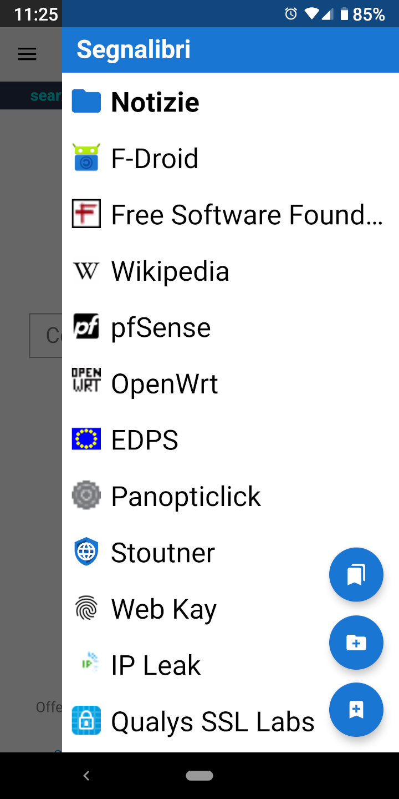

Segnalibri Segnalibri
Segnalibri SegnalibriE' possibile visualizzare i segnalibri attraverso un cassetto che si apre scorrendo dal lato destro dello schermo.
Toccando il pulsante flottante più in alto viene caricata la scheda dei segnalibri, nella quale sono disponibili opzioni avanzate come lo spostamento o l'eliminazione dei segnalibri stessi. Nella scheda dei segnalibri è anche disponibile un'opzione per caricare la vista del database. In questo modo è possibile visualizzare i segnalibri come sono salvati nel database SQLite, molto utile nel caso di problemi durante l'importazione o esportazione degli stessi.